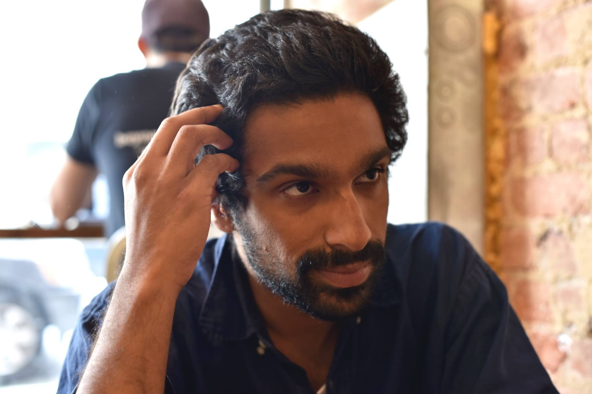

Raju Krishnamoorthy
Cryptographic engineer and research mathematician
krishnamoorthy gmail
krishnamoorthy alum mit

About
I currently work as a cryptographic engineer at Aztec Foundation. My recent work is on performance and correctness in cryptographic proving systems: implementation in C++/Rust, low-level optimization, code-level and protocol-level audits, and formal verification.
Before moving into cryptography, I worked as a research mathematician in arithmetic geometry and Hodge theory.
Earlier academic stops include Humboldt Universität Berlin, Bergische Universität Wuppertal, the University of Georgia, and Freie Universität Berlin, where I was an NSF postdoctoral fellow with Hélène Esnault. I received my Ph.D. from Columbia University, where I was lucky to have had Johan de Jong as my advisor.
Research and engineering
In cryptography, I have primarily worked on zero-knowledge proof systems, especially optimization and audit of proving-system components. This includes univariate and multilinear polynomial commitment schemes, sumcheck, PLONKish and M3-style architectures, and optimized finite-field arithmetic.
In mathematics, my research was motivated by abelian and non-abelian Hodge theory and by questions about when local systems or overconvergent F-isocrystals should come from geometry. I am also a p-curvature enthusiast. A short explanation of how I started thinking about these objects from very concrete considerations in my thesis is here.
Friends
I learned a lot of mathematics from graduate school friends: Boris Alexeev, Stéphane Benoist, Aaron Bernstein, Phil Engel, and Michael McBreen.